Everything from the original Nineteen is still here, with the same look and feel: grouping and color-coding, sorting, split view, counts, search, the high-frequency word list, pinnable viewers, zoom, and saving as HTML or PNG. The features below are new.
Rows, columns and color
- Columns separate from color: "Grouped by" now sets rows and columns separately, so the columns no longer have to repeat the colors. Group by participant in rows and date in columns, and color by satisfaction, to see three things at once. The title reads "Grouped by Participant and Date Shopped".
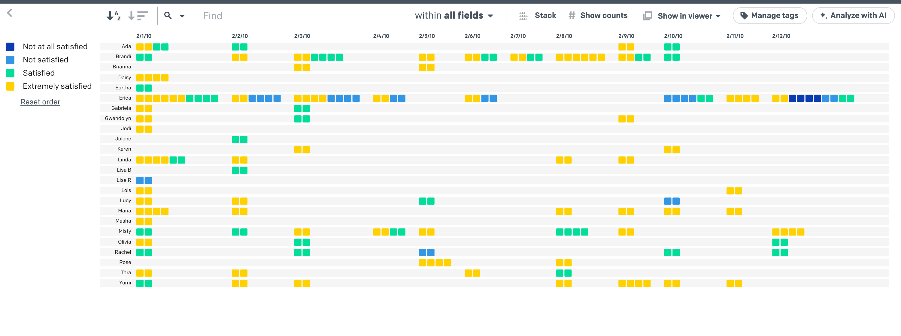
- Columns only: Set Rows to None and each column collects its data items in a compact grid, with the sort buttons ordering the columns.
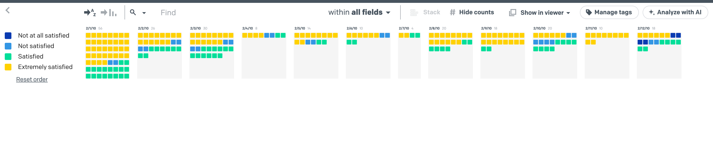
The Columns choice can be hidden with Classic Nineteen in Settings.
Sizing and fit
- Boxes that reshape to fit your screen: Data boxes no longer have to be square. With Stretch to fit, they become wider or taller rectangles so the whole dataset fills the window, and they resize automatically as the window changes or you regroup.
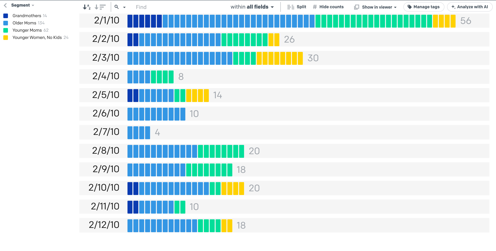
- Settings dialog: Separate smallest and largest limits for box width and height, a Stretch to fit default, and an opt-in "Remember settings on this device". Changes preview live and only apply when you save.
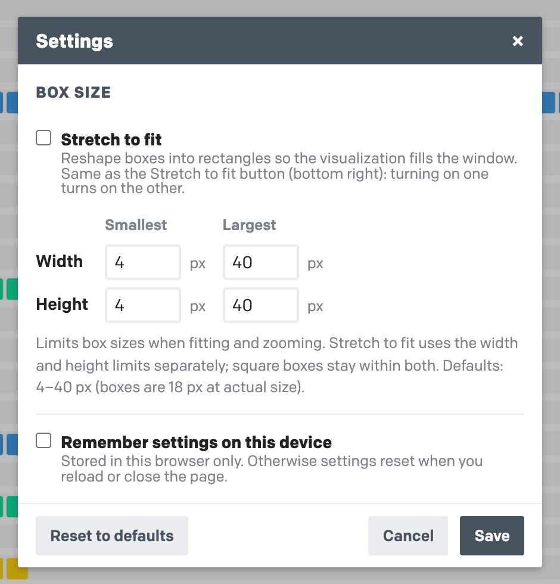
Tagging and organizing data
Tagging can be hidden with Classic Nineteen in Settings.
- Tagging: Add tags to any data item from its pinned viewer, with suggestions from existing tags. The tag box stays at the top while you scroll, so you can tag as you read. Tags are stored alphabetically in a "Tags" column, so they save and export with the data.
- Tag search results: The search box shows how many data items match. Tag every match at once with Tag these…, or remove a tag from them. Undo it, or color the view by that tag in one click.
- Manage tags: See every tag with its count. Rename a tag, drag one onto another to combine them, delete a tag everywhere, or convert a tag into a True/False data field for Excel, R or SPSS. Every change can be undone.
- Fields that hold lists: Any field with several values per cell, like “Target, Walmart”, can be grouped by combination and searched by whole value. Choose how values are split (commas, semicolons or new lines) and which field holds your tags.
- Tag-aware grouping and search: Grouping or coloring by tags uses each data item's tag combination, still one box per data item. List display options can leave tags out or focus on one, and search matches whole tags.
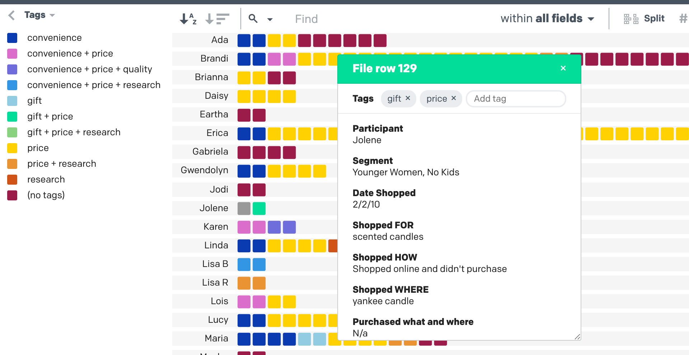
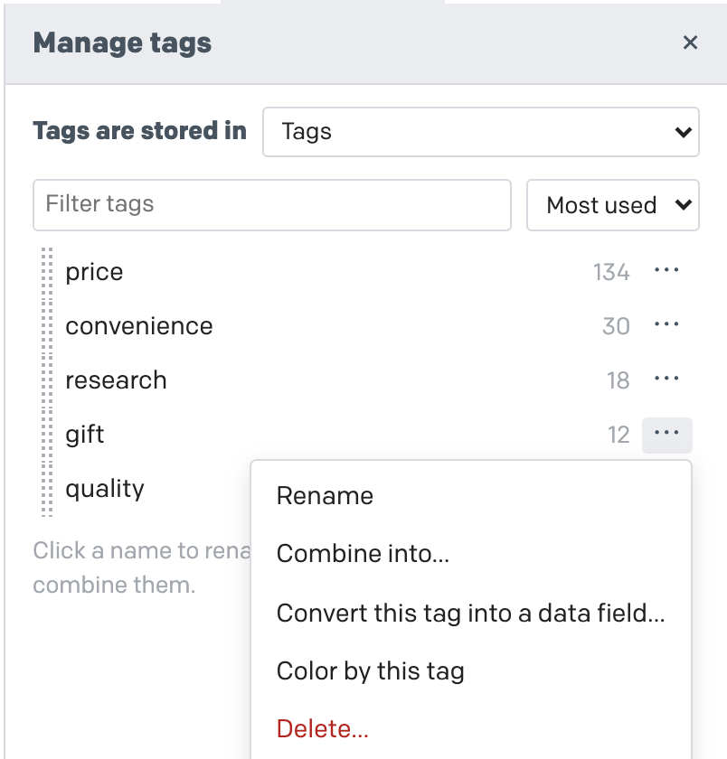
- Reorderable rows: Drag a row’s label up or down, and the whole row moves with you, to put rows in your own order. The sort button gains a ★ state, cycling A–Z → Z–A → ★, and each field keeps its order.
- Reorderable legend: Drag legend entries, or use Alt + arrow keys, to put values in a meaningful order, such as Not at all satisfied → Extremely satisfied. Colors and split bands follow the new order.
Before
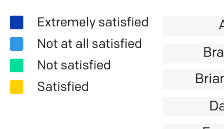
After
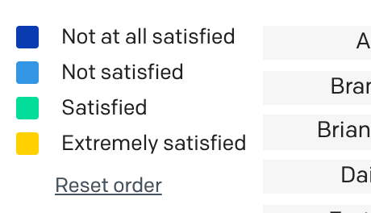
Layout and readability
- Split view headers: Split view gets a header row showing each column's value and, with counts on, its total. Labels wrap onto up to 3 lines, only the narrowest columns widen, and labels turn 90° only when many columns are narrow.
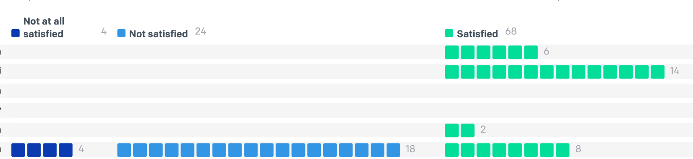
- Compact toolbar: On narrow screens, toolbar buttons shrink to icons so everything fits. "Analyze with AI" sits at the end of the toolbar, with its panel opening directly underneath.
- Large files: Above 3,000 data items the boxes move to their new places without gliding, so sorting, counting and searching stay quick on big files.
- Hiding the legend: The arrow at the top left hides the whole legend, color swatches included, leaving more room for the visualization. Click it again to bring the legend back.
Saving and export
- Spreadsheet and CSV downloads: Save the dataset, including tags and AI-added fields, as .xlsx or CSV, alongside the existing HTML and PNG options.
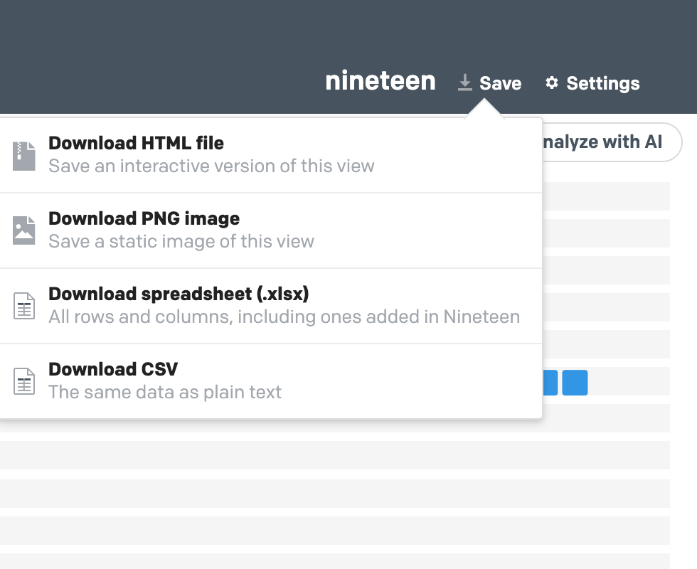
AI analysis
The AI tools can be hidden with Classic Nineteen in Settings.
- Copy prompt for AI: Builds a ready-made analysis prompt (themes, group comparisons, quotes, coding scheme, summary) with your data, to paste into any AI assistant. Nineteen sends nothing.
- Ask your data: Chat with Claude or ChatGPT about your data using your own API key. Answers cite data items, and clicking a citation highlights those items and opens their viewer.
- AI auto-coding: The AI assigns every data item to one of your categories, or suggests categories first. The result becomes a new field you can group, color and search by, with an optional reason field.
- Data sharing controls and consent: Choose exactly which data items and fields any AI tool sees, with a token estimate. Nothing is sent until you confirm, and API keys stay in memory unless you choose to remember them.
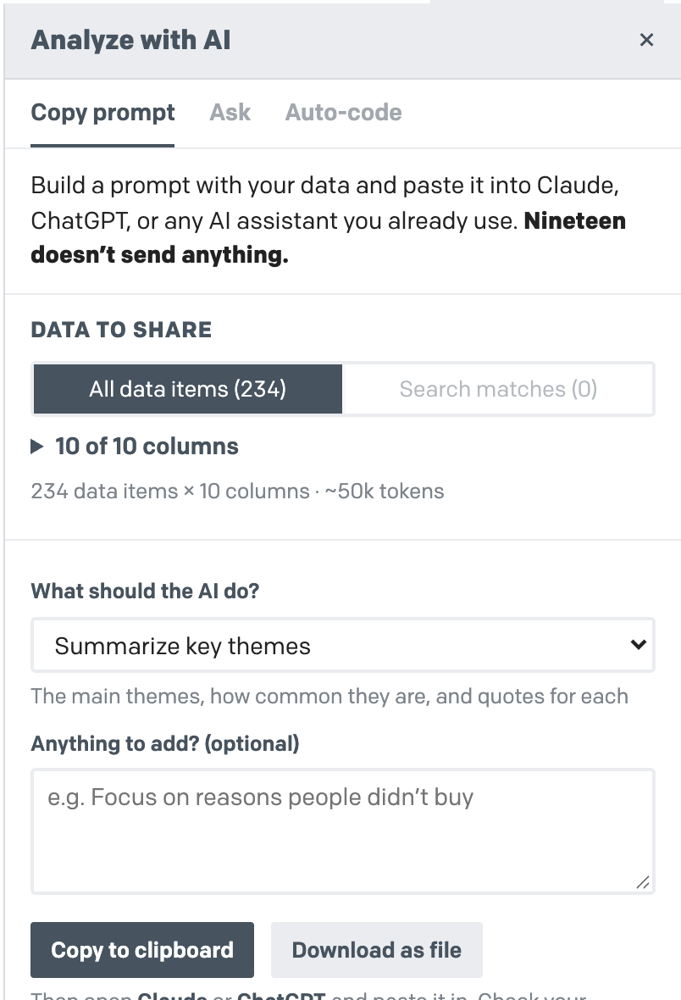
Classic Nineteen
- The original, by choice: A setting that keeps to rows, Split by color and a legend, as in the original Nineteen. It hides the Columns choice under "Grouped by", tagging and the AI tools. Off by default; find it under Features in Settings.